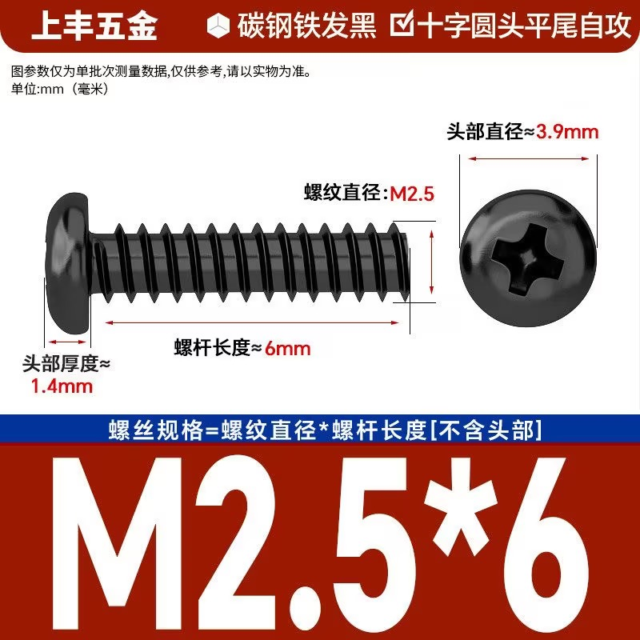
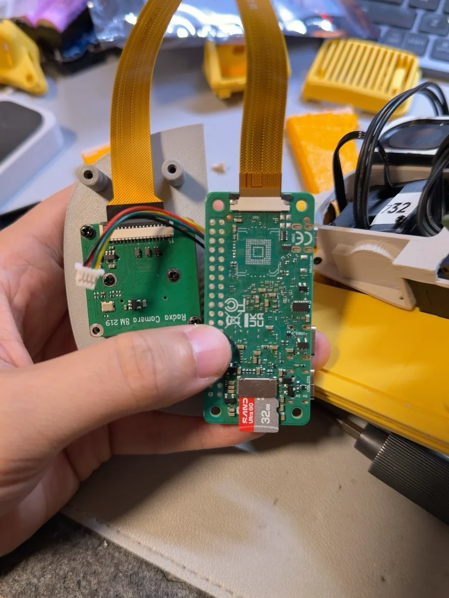
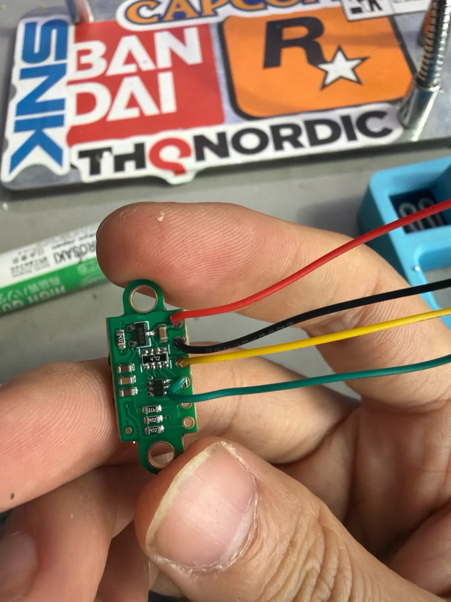
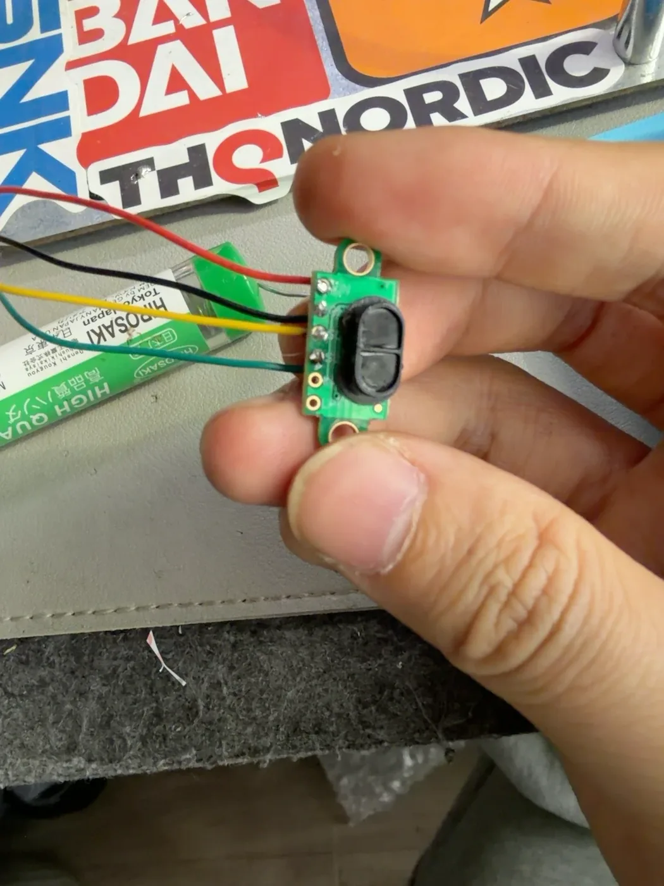
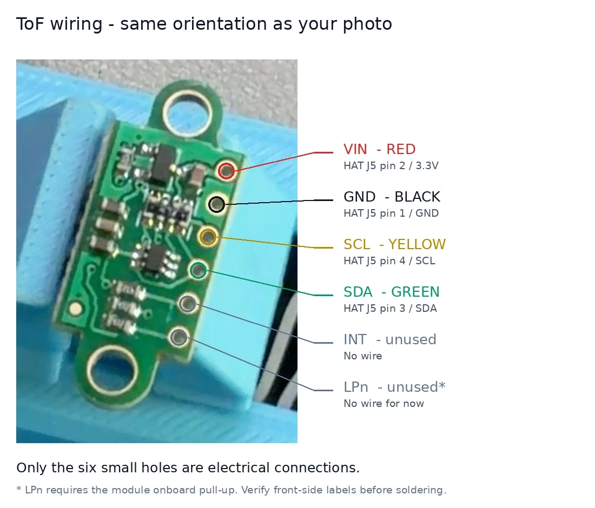
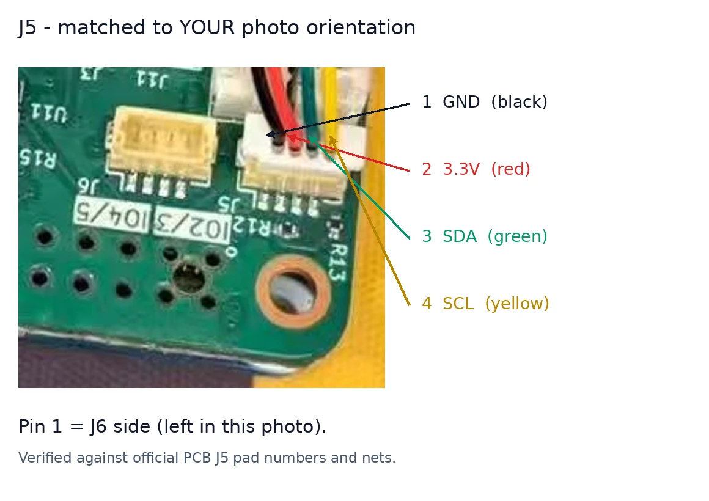
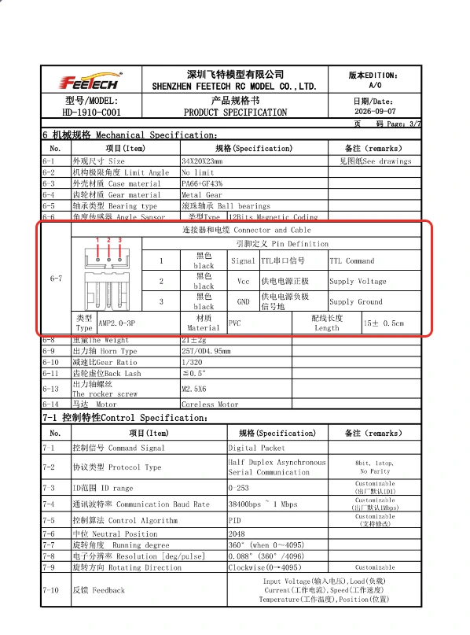
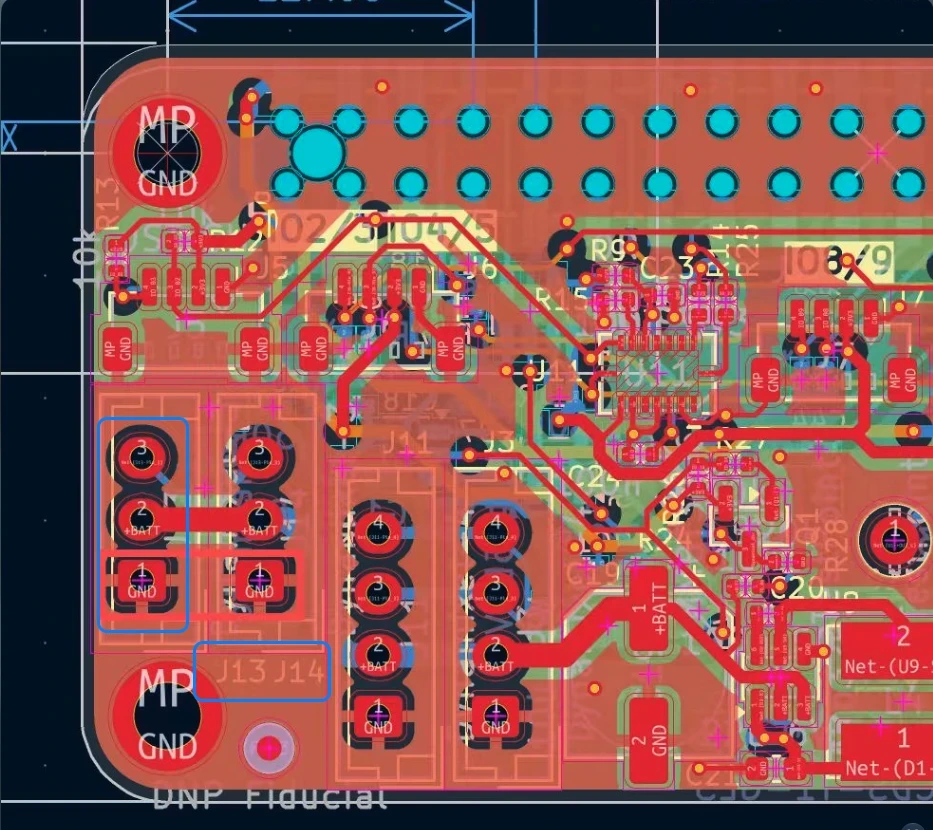
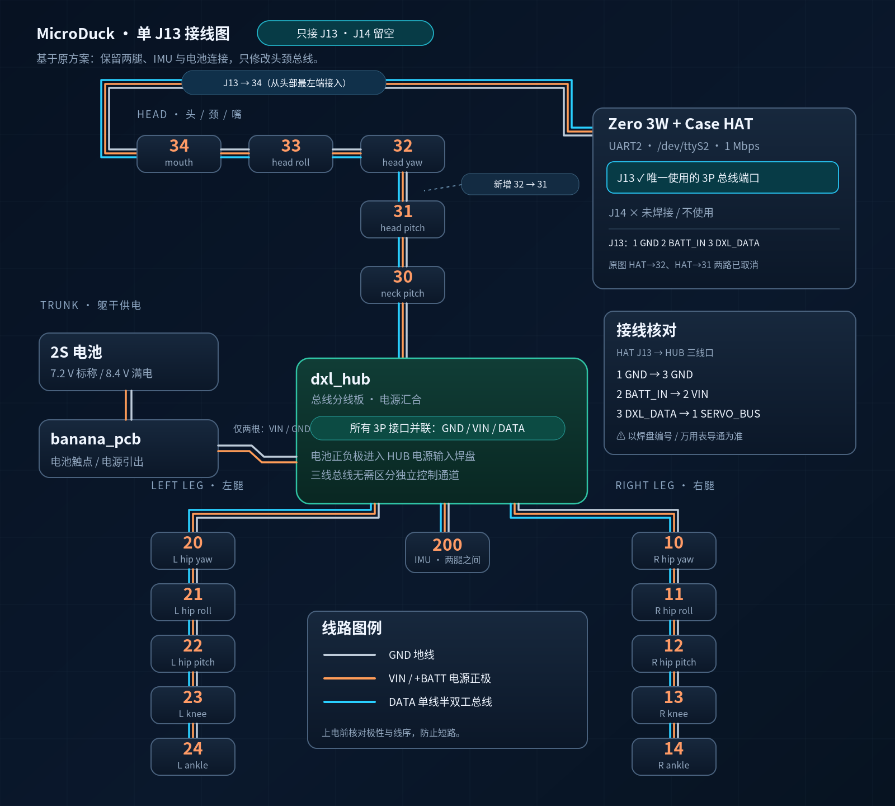

飞特 HD-1910 方案
用飞特舵机做一只 MicroDuck
五步都在这一页，向下滑动就能连续看完。也可以点目录，直接跳到要做的步骤。
- 准备材料和打印采购清单、打印外壳。
- 给舵机设 ID15 颗舵机各设一个编号，顺便转到中位。
- 主板、HAT 和接线摄像头排线、焊 ToF、舵机线序，最后装舵机。
- 写入系统、通电一键写 TF 卡、插卡方向、哪个 C 口供电。
- 用调试工具标定系统写好以后，用调试工具一步一步标定。
这个方案换了舵机，先确认 HAT 的版本。原版 HAT 和飞特舵机的线序不同；推荐的飞特兼容版可直接兼容飞特舵机线，第 3 步会分别说明。不确定的地方，先停下来对照板上标注和接线图。
第 1 步，共 5 步
准备材料和打印
先把零件买齐，再打印外壳。零件到手前可以先开始打印。
采购清单
按核心硬件、传感器、电路板、机械结构和调试工具分成五类。已购数量供参考，实际装机需求单独列出；价格以你下单时为准。
一、核心硬件
| 配件名称 | 已购数量 | 实际需求 | 单价 | 采购金额 |
|---|---|---|---|---|
| 飞特 HD-1910-C001 舵机 | 17 颗 | 15 颗 | ¥83.00 | ¥1,411.00 |
| Radxa ZERO 3W 2GB 主控 | 1 块 | 1 块 | ¥309.00 | ¥309.00 |
| MicroDuck Robot HAT（推荐飞特兼容版） | 1 块 | 1 块 | ¥120.00 | ¥120.00 |
| 32GB TF 卡 | 1 张 | 1 张 | ¥73.00 | ¥73.00 |
| 小计 | ¥1,913.00 | |||
舵机中有 2 颗备用。按装机所需的 15 颗计算，核心硬件单机成本为 ¥1,747.00。
二、传感器及音频
| 配件名称 | 已购数量 | 实际需求 | 采购金额 |
|---|---|---|---|
| VL53L5X V2 ToF 测距模块 | 1 块 | 1 块 | ¥49.50 |
| 3525 腔体扬声器（4Ω 3W） | 1 个 | 1 个 | ¥3.08 |
| 摄像头模块（Radxa Camera 8M 219，带排线） | 1 个 | 1 个 | 待核实 |
| IMU 模块 | 1 个 | 1 个 | 计入 PCB 套件 |
| 已知小计 | ¥52.58 | ||
摄像头已购买，价格待核实。IMU 的费用包含在下面的 PCB 套件中，不重复计算。
三、电路板及连接线
| 配件名称 | 数量参考 | 实际需求 | 参考金额 |
|---|---|---|---|
| IMU + HUB + 电池接线 PCB 套件（推荐店铺） | 1 套 | 1 套 | ¥89.00 |
| 5264-3P 转 AMP2.0 反向调试线 | 1 根 | 1 根 | ≈¥3.00 |
| SH1.0 4P 转杜邦母头线（20cm） | 已购 5 根 | 按接线需求 | ¥4.80 |
| AMP2.0-3P 舵机互连线（建议另购） | 已购 16 根 | 按长度与布线确定 | ¥33.80 |
| 参考小计 | ≈¥130.60 | ||
反向调试线只需 1 根，按原先 4 根 ¥12 折算约 ¥3。PCB 套件含电池背板 IMU、dxl_hub 和 banana_pcb。
四、机械结构及紧固件
| 配件名称 | 数量参考 | 实际需求 | 参考金额 |
|---|---|---|---|
| 6700 轴承 | 已购 3 个 | 待核实 | — |
| ET2216 轴承 | 已购 11 个 | 待核实 | — |
| 轴承合计 | 已购 14 个 | 按 CAD BOM 核对 | ¥41.00 |
| M2.5×6 十字圆头平尾自攻螺丝 | 1 包（100 个） | 1 包足够 | 待补充 |
| 3D 打印结构件 | 1 套 | 1 套 | 未统计 |
| 已知小计 | ¥41.00 | ||
轴承数量是采购记录，装机数量还需按适配 HD-1910 版本的 CAD BOM 核对。螺丝按下方规格买 100 个即可，价格待补充。
五、必要调试工具
| 工具名称 | 已购数量 | 用途 | 采购金额 |
|---|---|---|---|
| 灵影 TTL Adapter(A) 调试板 | 1 块 | 舵机 ID 编号、参数配置、调试 | ¥31.00 |
| 小计 | ¥31.00 | ||
按 17 颗舵机（含 2 颗备用）、1 根反向调试线，以及另购 16 根舵机互连线的订单实付 ¥33.80 计算，轴承只计一次总价。尚未计入摄像头、螺丝、打印耗材、电池等未核实或未列价格，因此不是完整装机总价。
- 舵机买 17 颗：装机用 15 颗，另外 2 颗备用。
- 调试板和反向线：第 2 步给舵机设 ID 时用，一次只接一颗舵机，1 根反向调试线就够。
- SH1.0 转杜邦线：第 3 步接 ToF 用。
- 螺丝：按下图选 M2.5×6 十字圆头平尾自攻螺丝，买 1 包 100 个足够。
推荐板卡：飞特兼容版 HAT、IMU 和香蕉电源板
作者推荐从同一家店购买 HAT、IMU 转接板和香蕉电源板（banana_pcb）。对应商品标题为“microduck开源机器鸭 kissqy开源仓库同款HAT加IMU TO DXL套件”。
按作者提供的使用信息，这个版本的 HAT 可直接兼容飞特舵机线，R33 电阻已优化，并且支持喇叭直插。
下单时分别核对 HAT、IMU 转接板和香蕉电源板选项；商品选项是否包含 HUB、连接线或其他配件，以店铺说明为准。清单中的 HAT ¥120 和 PCB 套件 ¥89 是原采购记录，推荐商品的现价以所选配置为准。
建议另购舵机互连线
设 ID 的反向调试线只需 1 根；装机用的舵机互连线需要按总线布线另行准备。下面这款是作者购买的“永成电子”AMP2.0 线材：100 mm、特软硅胶 24#，订单选项为“双头反向”。
作者的装机经验是：舵机随附线材可能出现丢包，导致动作卡顿，严重时摔倒，因此建议另购连接可靠的互连线。出现卡顿时也要同时排查供电、接触和总线状态，不能只凭现象认定是线材问题。
店铺对“同向／反向”的叫法可能不同，购买时按两端针脚对应关系和所用板卡核对。推荐的飞特兼容 HAT 与原版 HAT 的接线要求不同，不要把原版板子的反向接法直接套到兼容版。
连接螺丝的规格
选择碳钢发黑、十字圆头、平尾自攻，M2.5×6。螺纹直径为 2.5 mm，螺杆长 6 mm（不含头部）；图中头部直径约 3.9 mm、厚约 1.4 mm。

电池、打印耗材、TF 读卡器、电烙铁和焊锡（焊 ToF 要用）、一台电脑。
打印外壳
MicroDuck 的外壳和结构件都是 3D 打印的。飞特 HD-1910 和官方 XL330 的外形尺寸不一样，要打印适配 HD-1910 的版本。
- 名字里带“软质”的零件（比如嘴部软垫）用 TPU 打印，其余用普通硬质耗材。
- 颜色随你喜欢，不影响功能。
HD-1910 版打印文件的下载地址和打印参数还在整理，补上后会更新这里。
第 2 步，共 5 步
给舵机设 ID
15 颗舵机接在同一根线上，主板靠编号（ID）区分它们。新舵机出厂都是同一个编号，所以装之前要一颗一颗改好。
这一步要用到
- 15 颗 HD-1910 舵机（备用的 2 颗也可以一起设）
- 灵影 TTL Adapter(A) 调试板
- 5264-3P 转 AMP2.0 反向调试线 1 根
- 一台 Windows 电脑，装好飞特的舵机调试软件
- 贴纸和笔，用来给舵机写编号
每颗舵机的编号
下面的编号表和接线总图统一按后视方向排布：鸭子背对你，你和鸭子看向同一方向。左边是鸭子的左腿（20–24），右边是鸭子的右腿（10–14）。
文中的“左／右”始终指鸭子自身的左／右。如果你面对鸭子的嘴看，它的左腿会在你的右手边，右腿会在你的左手边。
头部
- 30脖子前后
- 31头部点头
- 32头部左右转
- 33头部侧歪
- 34嘴
左腿
- 20左髋转向
- 21左髋侧摆
- 22左髋前后
- 23左膝
- 24左踝
右腿
- 10右髋转向
- 11右髋侧摆
- 12右髋前后
- 13右膝
- 14右踝
这套编号和官方 MicroDuck 一致，后面的系统和调试工具都按它来认舵机。
怎么设
- 一次只接一颗舵机。两颗同时接，编号一样，软件分不清。
- 调试板接电脑 USB，舵机用反向调试线接到调试板上。调试板怎么给舵机供电，按调试板自带的说明接。
- 打开飞特调试软件，波特率选 1Mbps，搜索舵机。新舵机出厂编号是 1。
- 把编号改成上表里的数字，写入保存。
- 在软件里让舵机转到
2048，也就是正中间。第 3 步装舵盘时要它在中间。 - 马上在舵机上贴纸写编号，然后拔下来，换下一颗。
重新上电再搜一次，能用新编号搜到，就说明改好了。
这款舵机的几个数字
来自飞特 HD-1910-C001 的产品规格书，设 ID 和调试时会用到。
| 编号范围 | 0–253，出厂是 1 |
|---|---|
| 通信速度 | 38400bps–1Mbps，出厂是 1Mbps |
| 转动范围 | 360°，读数 0–4095 |
| 中位 | 2048 |
| 每一格 | 约 0.088° |
不同版本的飞特调试软件按钮位置可能不一样，找“搜索”“ID”“写入”这几个功能就行。
第 3 步，共 5 步
主板、HAT 和接线
这一步接摄像头、焊 ToF、看清舵机线序，最后把舵机装进身体。按小节顺序做。
这一步要用到
- Radxa ZERO 3W 主控和 HAT（推荐飞特兼容版本）
- 摄像头和排线
- VL53L5X ToF 模块和 SH1.0 4P 转杜邦线
- 电烙铁、焊锡
- 设好 ID 的 15 颗舵机，打印好的外壳
作者推荐的飞特兼容 HAT可直接兼容飞特舵机线，R33 电阻已优化，喇叭可直插；IMU 转接板和香蕉电源板也推荐同一家店。下面保留的原版 HAT 接口图用于说明差异，接线时以手中板卡的丝印、针脚定义和店铺接线说明为准。
1. 摄像头接到主板
- 轻轻掀起主板排线座上的卡扣。
- 把排线插到底，方向照图 1。
- 把卡扣压回去，轻拉一下排线，不松就对了。

2. 焊 ToF
ToF 是测距的“眼睛”，装在头上。用 SH1.0 4P 转杜邦线：杜邦那头的线焊到 ToF 模块上，SH1.0 那头插到 HAT 板上。


六个小孔从上到下这样接（方向和图 4 一样）：
| 线色 | ToF 孔位 | 接到 HAT 的 J5 |
|---|---|---|
| 红 | VIN | 2 号脚（3.3V） |
| 黑 | GND | 1 号脚（GND） |
| 黄 | SCL | 4 号脚（SCL） |
| 绿 | SDA | 3 号脚（SDA） |
| 不接 | INT | — |
| 不接 | LPn | — |

LPn 不接线时，靠模块板上自带的上拉电阻。不同批次的模块孔位顺序可能不同，焊之前按正面印的字核对一遍。
3. ToF 插到 HAT 的 J5
使用下图的原版 HAT 时，SH1.0 那头插到 J5 接口，1 号脚在靠近 J6 的一侧。使用推荐的兼容板时，先核对板上的 ToF 接口和针脚标注。
| J5 脚位 | 信号 | 线色 |
|---|---|---|
| 1（靠 J6 一侧） | GND | 黑 |
| 2 | 3.3V | 红 |
| 3 | SDA | 绿 |
| 4 | SCL | 黄 |

系统写好后，调试工具的“传感器”页会显示 ToF 的距离。用手挡在嘴前面，距离变近就说明接对了。
4. 看清舵机线序
先分清原版 HAT 和飞特兼容 HAT。推荐的飞特兼容版可直接兼容飞特舵机线；下图和针脚表说明的是原版 HAT，它与飞特舵机的 1、3 号脚定义相反。


| 脚位 | 舵机（AMP2.0-3P） | 原版 HAT（J13 / J14） |
|---|---|---|
| 1 | 信号 | GND |
| 2 | 电源正（Vcc） | 电源正（+BATT） |
| 3 | GND | 信号 |
只有上表这种原版 HAT 接飞特舵机时，才按 1 ↔ 3、2 ↔ 2 转接，让信号对信号、GND 对 GND。推荐的飞特兼容板按它自身的兼容接口定义接线，不再照原版表额外反接。
无论使用哪个版本，都先断电，用万用表核对线两端的信号、电源和 GND。线材的商品名称“同向／反向”不能代替实际针脚核对；信号和 GND 接错，舵机不会回应。
喇叭使用推荐兼容板的直插接口，插入前核对插头与板上标注。装机互连线建议参考作者另购的软硅胶 AMP2.0 线材；若出现丢包和动作卡顿，同时检查线材、接头、供电和总线状态。
5. 按单 J13 方案接总线
这套接法只用 HAT 的 J13，J14 留空。头颈舵机、两条腿和 IMU 接到同一条三线总线上，按下面这张总图核对。图中的 HAT 针脚是原版参考；飞特兼容板按自身接口定义接线。
看图方向：按后视方向排布，鸭子背对你。图左是鸭子自身的左腿 20–24，图右是右腿 10–14，与上面的编号表一致。这是接线示意图，不表示实际线材必须按图中的几何位置走线。

- 头颈：
J13 → 34 → 33 → 32 → 31 → 30 → dxl_hub。从嘴部 34 接入，32 与 31 之间补上一段连接；J14 不接线。 - 两腿和 IMU：HUB 分别接左腿
20 → 21 → 22 → 23 → 24、右腿10 → 11 → 12 → 13 → 14和两腿之间的IMU 200。 - 电池：2S 电池经
banana_pcb引出 VIN 和 GND 两根线，接到 HUB 的电源输入焊盘。
| 原版 HAT J13 | HUB 三线口 |
|---|---|
| 1 · GND | 3 · GND |
| 2 · BATT_IN | 2 · VIN |
| 3 · DXL_DATA | 1 · SERVO_BUS |
HUB 的 3P 接口彼此并联。插头方向和脚位以板上丝印、焊盘编号及万用表导通结果为准，上电前核对 GND、VIN、DATA。
6. 装舵机
- 按第 2 步的编号表，把每颗舵机装到对应的关节。贴纸上的编号要和位置对上。
- 装舵盘之前，确认舵机还在
2048中位（第 2 步已经转好）。装的时候别转动舵机轴。 - 舵机线按上面的单 J13 总图连接，走线别被关节夹住。
如果某颗舵机装的时候被转动了很多，第 5 步的调试工具会提示你，并告诉你怎么拆下来转回 2048。
第 4 步，共 5 步
写入系统、通电
把系统写进 TF 卡，插到主板上，再从正确的 C 口接电。
这一步要用到
- 32GB TF 卡和读卡器
- 一台电脑
- Armbian Imager（写卡工具）
- 一根能传数据的 USB-C 线
1. 一键写入系统
适配这套硬件的系统镜像和下载地址还在整理，补上后会更新这里。
- TF 卡插到读卡器上，读卡器插到电脑上。
- 打开 Armbian Imager，选下载好的系统镜像文件。压缩包不用解压，直接选。
- 选你的 TF 卡。看清楚盘符，选错会把别的盘清空。
- 点写入，等它写完并校验通过，再拔卡。
2. TF 卡插到主板
卡槽在主板背面。卡的金属触点朝向电路板，印字的一面朝外，推到底。
3. 接电：用靠近 TF 卡的那个 C 口
主板上有两个 USB-C 口。靠近 TF 卡、板上印着 USB_OTG 和 5V IN 的那个，才是供电和调试接口。另一个印着 USB3 的不用来供电。
调试要用到数据，只能充电的线连不上电脑。
4. 第一次开机
- 第一次开机比较慢，等一两分钟。
- 连 Wi-Fi 的方法以系统镜像的说明为准。
- 如果要用无线手柄，让 MicroDuck 连 5 GHz 的 Wi-Fi。2.4 GHz 可能和手柄互相干扰，出现断网。这个经验来自 kissqy 的飞特版常见问题。
第 5 步，共 5 步
用调试工具标定
系统写好、通上电以后，用调试工具一步一步标定。每个舵机装得都有一点不一样，标定就是告诉 MicroDuck 它的“正中间”在哪。
调试工具目前用的是模拟数据，可以先熟悉流程，但还不会连接或控制真实的 MicroDuck。接实机的版本做好后会更新。
工具里的七步
- 连接填 MicroDuck 的地址，连上主控。
- 检查15 颗舵机全部正常在线。哪颗有问题，会直接告诉你 ID。
- 摆零位照屏幕把腿和头摆正，一次设一条腿，也可以一颗一颗设。
- 姿态传感器扶正、前倾、左倾，各停一下。
- 摄像头 / ToF（可选）同一页确认画面和距离变化，可以单独跳过某一项，也可以直接跳过未检查项。
- 试站让它慢慢站起来，对照屏幕看姿势。局部有偏差，可以只重标一颗，或小幅微调、试用后再保存。
- 手柄连上手柄，学几个常用按键。
试站后只修正有偏差的关节
在“有偏差，调整”中选择关节。微调支持 0.1° 和 0.5° 步长，先试用，效果合适再保存；修改后重新试站确认。明显摆错或拆装过，就重标那颗关节，其他关节的结果会保留。
摄像头和 ToF 已放进第 5 步；跳过结果会保留在完成页，之后可以补做。
做完以后
想让 MicroDuck 学会自己的动作，可以用作者的训练实验室：heranhe/microduck-lab-cloud ↗